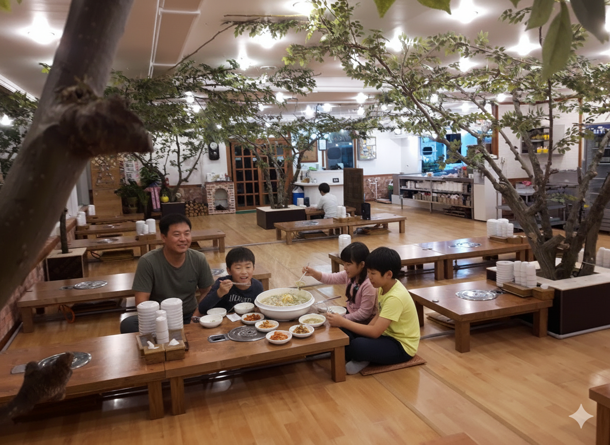
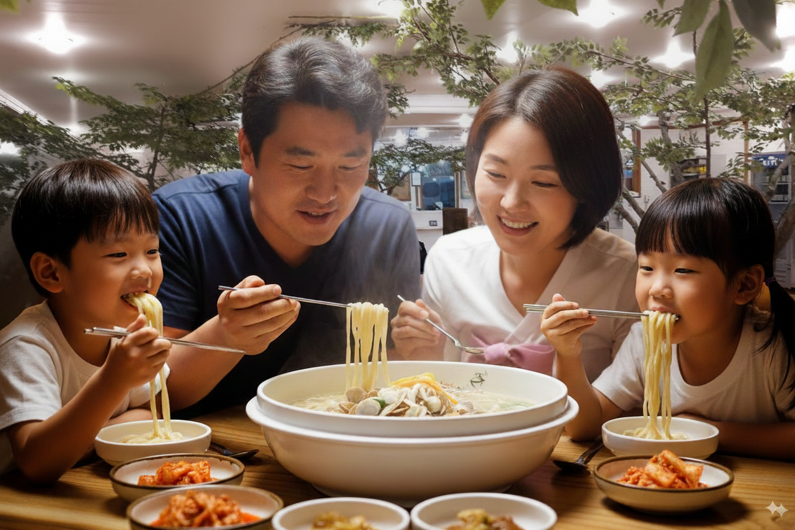
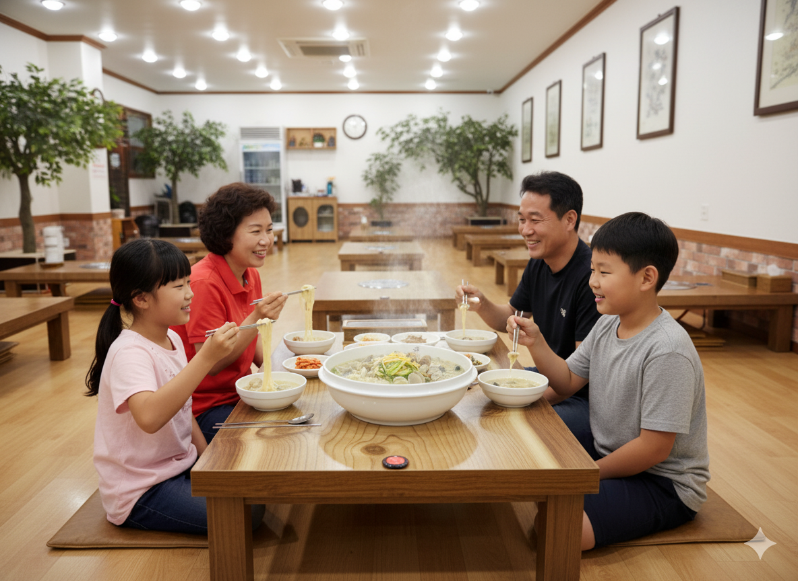

📝 프롬프트 작성 순서
실제 식당의 배경과 음식 사진을 준비합니다.
프롬프트 가이드에 맞춰 프롬프트를 작성합니다.
작성한 프롬프트를 Chat GPT, Gemini, Claude에 준비한 식당의 배경과 음식 사진을 함께 넣어서 더 자세한 이미지 생성 프롬프트를 얻습니다.
⚠️ 작성 전 주의사항
- 식당 배경 사진: 정면의 사진을 넣어주면 더 자연스러운 이미지 생성이 가능합니다
- 이미지 비율: 나노바나나를 사용하기 위해 구글 AI 스튜디오에 사진을 첨부할 때 두 번째 사진의 비율로 생성되기 때문에 첨부 순서에 유의해야 합니다
📋 프롬프트 가이드
✍️ 프롬프트 작성 예시 (Chat GPT, Gemini, Claude)
| 구분 | 내용 |
|---|---|
| 제안 | 다음은 식당의 사진을 생성하기 위한 프롬프트 가이드야. 프롬프트 가이드를 활용하여 만든 예시프롬프트도 아래에 제시했어. 가이드를 고려하여 더 나은 프롬프트를 한글과 영어로 제안해줘. 이미지를 생성하기에 참고할만한 이미지를 첨부했어. 참고해서 프롬프트 작성해줘. |
| 프롬프트 형식 | 주체, 배경 및 환경, 매체 및 스타일, 세부 묘사 및 특수 효과, 구도 및 앵글, 조명, 색상 및 분위기 |
| 주체 | 식당에서 4명의 한국인 가족이 첨부한 이미지의 바지락칼국수를 맛있게 먹고 있는 |
| 배경 및 환경 | 첨부한 사진의 식당배경 |
| 매체 및 스타일 | 사실적 이미지 |
| 세부 묘사 및 특수효과 | 1080P 화질, 16:9 화면 비율 |
| 구도 및 앵글 | 구도는 정면 |
| 조명 | 식당의 조명 |
| 색상 및 분위기 | 즐겁고 맛있게 먹고 있는 분위기 |
🔧 고정 프롬프트 가이드 (템플릿)
주체, 배경 및 환경, 매체 및 스타일, 세부 묘사 및 특수효과, 구도 및 앵글, 조명, 색상 및 분위기를 작성할 때는 홈페이지의 참고자료 탭을 참고해서 작성하는 것을 추천합니다.
| 구분 | 내용 |
|---|---|
| 제안 | 다음은 식당의 사진을 생성하기 위한 프롬프트 가이드야. 프롬프트 가이드를 활용하여 만든 예시프롬프트도 아래에 제시했어. 가이드를 고려하여 더 나은 프롬프트를 한글과 영어로 제안해줘. 이미지를 생성하기에 참고할만한 이미지를 첨부했어. 참고해서 프롬프트 작성해줘. |
| 프롬프트 형식 | 주체, 배경 및 환경, 매체 및 스타일, 세부 묘사 및 특수 효과, 구도 및 앵글, 조명, 색상 및 분위기 |
| 주체 | [ 원하는 상황(자세하게 설명할수록 더 좋음) ] |
| 배경 및 환경 | [ 첨부한 사진의 식당배경 ] |
| 매체 및 스타일 | 사실적 이미지 |
| 세부 묘사 및 특수효과 | [ 원하는 화질, 원하는 화면 비율 ] |
| 구도 및 앵글 | [ 원하는 구도와 앵글 ] |
| 조명 | [ 원하는 조명(예시 : 채광, 식당의 조명 등) ] |
| 색상 및 분위기 | [ 원하는 색상 및 분위기 ] |
🎯 프롬프트 결과 (AI별 비교)
🔹 한글 프롬프트
주체: 전통 한식당에서 한국인 가족 네 명이 따뜻한 바지락칼국수를 맛있게 먹고 있는 장면
배경 및 환경: 첨부한 두 번째 사진의 식당 내부 — 좌식형 테이블, 나무 인테리어, 천장 조명, 실내에 심어진 나무가 있는 공간
매체 및 스타일: 사실적인 사진 스타일, 고해상도 디지털 포토그래피
세부 묘사 및 특수 효과: 김이 모락모락 나는 칼국수, 그릇 옆의 김치 반찬, 테이블 위의 따뜻한 조명 반사, 4K 화질, 16:9 비율
구도 및 앵글: 가족을 중심으로 한 정면 구도, 테이블 위 음식이 잘 보이도록 약간 위에서 내려다보는 앵글
조명: 식당 내부의 따뜻한 백색 조명, 자연스럽고 포근한 밝기
색상 및 분위기: 따뜻하고 편안한 색감, 가족이 웃으며 식사하는 즐거운 분위기
🔹 English Prompt
Subject: A Korean family of four enjoying warm clam kalguksu (noodle soup) together in a traditional Korean restaurant
Background & Environment: The restaurant interior similar to the second reference image — wooden floor, low tables for floor seating, indoor trees, and warm ceiling lights
Medium & Style: Realistic photography style, high-resolution digital photo
Details & Effects: Steaming bowl of kalguksu, side dishes like kimchi on the table, soft light reflections on the soup, 4K quality, 16:9 aspect ratio
Composition & Angle: Frontal composition centered on the family, slightly top-down angle showing the food clearly
Lighting: Warm indoor lighting creating a cozy and natural brightness
Color & Mood: Soft, warm color tones with a cheerful and heartwarming family dining atmosphere
🇰🇷 더 나은 프롬프트 제안 (한글) - 상세하고 생동감 있는 묘사
주체: "식당에서 행복하게 웃으며 바지락칼국수를 함께 먹고 있는 4명의 한국인 가족. 아이들은 젓가락으로 면을 집어 올리며 즐거워하고, 부모님은 따뜻한 국물을 맛보며 만족스러운 표정을 짓고 있는"
배경 및 환경: "첨부된 사진의 따뜻하고 아늑한 식당 내부. 나무 테이블과 은은한 조명, 벽에 걸린 아기자기한 장식품들이 어우러져 편안한 분위기를 자아내며, 테이블 위에는 김치와 밑반찬들이 정갈하게 놓여 있는"
매체 및 스타일: "극사실주의적인 사진, 자연광을 활용한 영화 같은 장면"
세부 묘사 및 특수 효과: "김이 모락모락 피어나는 바지락칼국수, 면발의 탱글함과 바지락의 신선함이 느껴지는 디테일, 땀방울이 송골송골 맺힌 가족들의 생생한 표정, 4K 해상도, 시네마틱 와이드 스크린 (21:9 비율)"
구도 및 앵글: "가족 구성원들의 얼굴이 모두 잘 보이는 로우 앵글에서 약간 측면으로 촬영된 클로즈업 샷, 식탁 위 음식과 가족의 상호작용이 강조되도록"
조명: "식당 내부의 따뜻한 오렌지색 조명과 테이블 위를 비추는 부드러운 스포트라이트, 창문으로 들어오는 자연광이 조화롭게 어우러진"
색상 및 분위기: "따뜻하고 활기찬 주황색과 노란색 톤이 주를 이루는 다채로운 색감, 가족의 사랑과 행복이 느껴지는 즐겁고 정겨운 분위기"
🇺🇸 Improved Prompt Suggestions (English) - Detailed and Vivid Description
Subject: "A cheerful Korean family of four happily sharing a bowl of 'bajirak kalguksu' (clam noodle soup) at a restaurant. The children are joyfully picking up noodles with chopsticks, while the parents savor the warm broth with contented expressions."
Background and Environment: "The warm and cozy interior of the restaurant from the attached photo. Wooden tables, soft lighting, and quaint wall decorations create a comfortable ambiance. Kimchi and side dishes are neatly arranged on the table."
Medium and Style: "Hyperrealistic photograph, cinematic scene utilizing natural light."
Detailed Description and Special Effects: "Steaming 'bajirak kalguksu' with visible plump noodles and fresh clams. Detailed expressions of the family, with small beads of sweat, conveying their enjoyment. 4K resolution, cinematic widescreen (21:9 aspect ratio)."
Composition and Angle: "A close-up shot, slightly from the side, with a low angle that clearly shows the faces of all family members, emphasizing the interaction between the family and the food on the table."
Lighting: "Warm, orange-toned interior lighting combined with soft spotlights illuminating the tables, complemented by natural light streaming through the windows."
Color and Mood: "Vibrant color palette dominated by warm oranges and yellows. A joyful and heartwarming atmosphere that conveys family love and happiness."
🇰🇷 개선된 프롬프트 (한글)
주체: 4명의 한국인 가족(부모와 자녀 2명)이 낮은 나무 테이블에 둘러앉아 김이 모락모락 나는 바지락칼국수를 젓가락으로 들어올리며 행복하게 식사하는 모습
배경 및 환경: 실내에 살아있는 나무들이 자라고 있는 독특한 한국 전통 식당 인테리어, 낮은 좌식 테이블들이 배치된 넓은 나무 마루 바닥, 흰색 벽과 나무 소재의 따뜻한 인테리어, 배경에 주방과 전통 벽돌 장식이 보이는 공간
매체 및 스타일: 자연스러운 조명의 고품질 사진, 실제 식당에서 촬영한 듯한 사실적이고 생동감 있는 이미지 스타일
세부 묘사 및 특수 효과:
- 테이블 위 큰 그릇에 담긴 바지락칼국수(하얀 국물, 바지락 조개, 애호박, 파가 보이는), 작은 접시에 담긴 김치
- 가족 구성원들의 자연스러운 미소와 대화하는 표정
- 4K 고해상도, 16:9 화면 비율
- 음식에서 올라오는 김(증기) 효과
구도 및 앵글: 테이블을 중심으로 가족 전체가 보이는 미디엄 풀샷, 약간 높은 각도(bird's eye view 30도)에서 촬영한 구도로 음식과 사람들이 모두 잘 보이도록
조명: 식당의 자연스러운 천장 조명과 간접 조명, 따뜻한 색온도(3000-3500K)의 부드러운 실내 조명이 테이블과 가족들을 은은하게 비추는
색상 및 분위기: 따뜻한 나무색 톤과 흰색이 조화를 이루는 아늑한 색감, 가족이 함께 모여 맛있는 음식을 나누며 행복해하는 정겨운 분위기, 한국 가정식의 편안함과 온기가 느껴지는
🇺🇸 Improved Prompt (English)
Subject: A Korean family of four (parents and two children) sitting around a low wooden table, happily eating and lifting noodles with chopsticks from steaming bowls of bajirak kalguksu (clam noodle soup)
Background and Environment: Unique Korean traditional restaurant interior with live trees growing indoors, spacious wooden floor with multiple low dining tables arranged throughout, warm wooden materials and white walls, visible kitchen and traditional brick decorations in the background
Medium and Style: High-quality photography with natural lighting, realistic and vivid image style that looks authentically captured in an actual restaurant setting
Details and Special Effects:
- Large bowls of bajirak kalguksu on the table (white broth, clam shells, zucchini, and green onions visible), small side plates with kimchi
- Natural smiles and conversing expressions on family members' faces
- 4K high resolution, 16:9 aspect ratio
- Steam rising from the hot soup creating a fresh-cooked effect
Composition and Angle: Medium full shot centered on the table showing the entire family, captured from a slightly elevated angle (30-degree bird's eye view) so both the food and people are clearly visible
Lighting: Natural restaurant ceiling lights and indirect ambient lighting, soft interior lighting with warm color temperature (3000-3500K) gently illuminating the table and family
Color and Atmosphere: Cozy color palette harmonizing warm wood tones with white, heartwarming atmosphere of a family gathering to share delicious food together, conveying the comfort and warmth of Korean home-style dining
🌟 프롬프트 작성 예시 (나노바나나)
- 추가 요청: 프롬프트에 나와있는 반영사항 중 추가로 요청할 경우 DeepL을 이용하여 영어로 번역하여 내용을 추가하면 됩니다
- 화질 조정: Chat GPT, Gemini, Claude의 프롬프트의 경우 화질 설정이 4K 고화질이기 때문에 화질은 1080P로 변경해도 상관없습니다
🎨 생성형 AI 프롬프트 나노바나나 결과물
위의 프롬프트를 나노바나나에 입력하여 생성된 이미지입니다.
📷 Chat GPT 프롬프트 결과

📷 Gemini 프롬프트 결과

📷 Claude 프롬프트 결과

🎉 식당 이미지 생성 가이드 완료!
이 가이드를 따라 맛있고 매력적인 식당 이미지를 생성해보세요.
- 준비: 식당 배경과 음식 사진 준비
- 작성: 가이드에 맞춰 프롬프트 작성
- 개선: AI 도구로 상세 프롬프트 생성
- 생성: 나노바나나로 최종 이미지 생성
- 식당 배경 사진은 정면에서 촬영한 것을 사용하세요
- 나노바나나에서 두 번째 사진의 비율로 생성되므로 순서에 주의하세요
- 음식의 김(증기)이 모락모락 나는 디테일을 추가하면 더욱 생동감 있습니다
- 가족의 표정과 상호작용을 상세히 묘사하면 더 자연스러운 결과를 얻을 수 있습니다
- 홈페이지의 참고자료 탭을 활용하여 프롬프트를 작성하세요